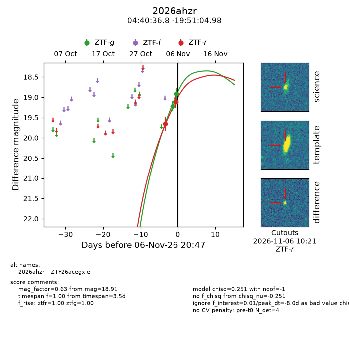
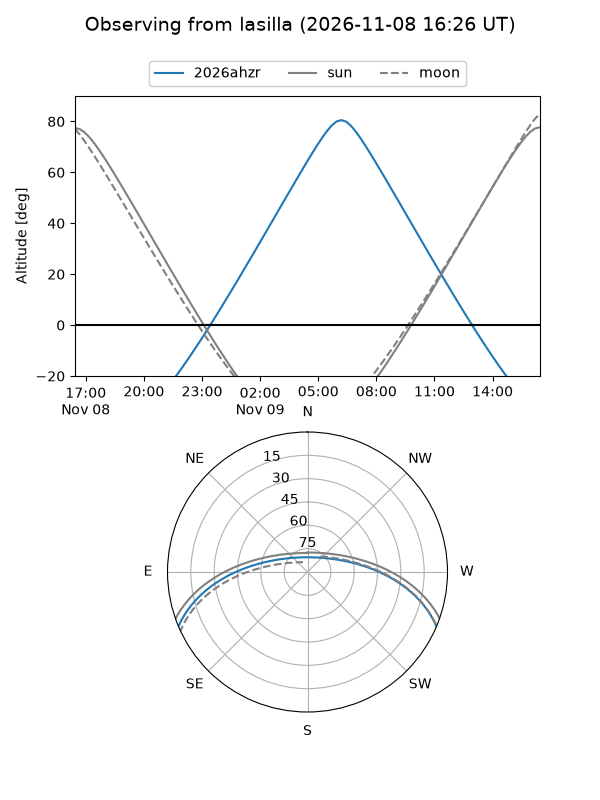
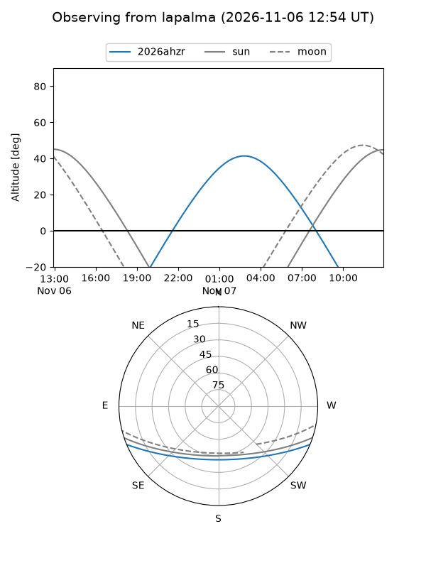
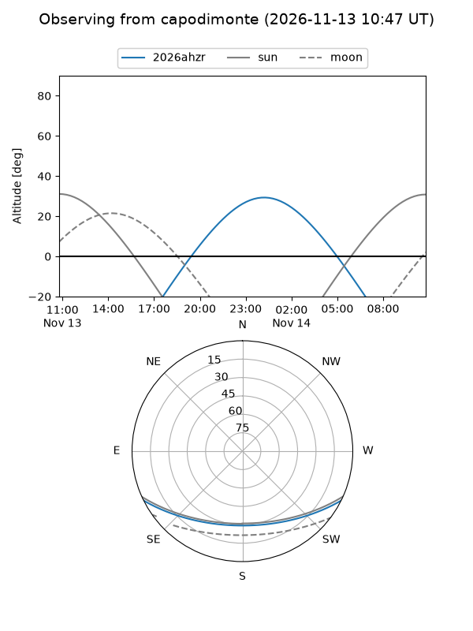
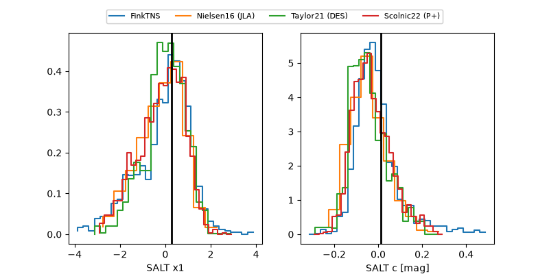

2026ahzr
Target 2026ahzr at 2026-11-06 20:49
Aliases and brokers:
FINK-ZTF: ztf.fink-portal.org/ZTF26acegxie
Lasair-ZTF: lasair-ztf.lsst.ac.uk/objects/ZTF26acegxie
ALeRCE-ZTF: alerce.online/object/ZTF26acegxie
YSE-PZ: ziggy.ucolick.org/yse/transient_detail/2026ahzr
TNS name: wis-tns.org/object/2026ahzr
Direct TNS query: direct search
alt names
ZTF26acegxie (ztf,fink_ztf)
2026ahzr (tns,yse)
Coordinates:
equatorial (ra, dec) = 70.1533,-19.85138
equatorial (HMS+DMS) = 04:40:36.78,-19:51:04.98
galactic (l, b) = (218.0209,-37.38416)
Flags:
peak dt: -8.0
Photometry:
last ztfg=18.91, ztfr=19.11
2 ztfg, 2 ztfr detections
Lightcurve

Visibility



Additional plots
